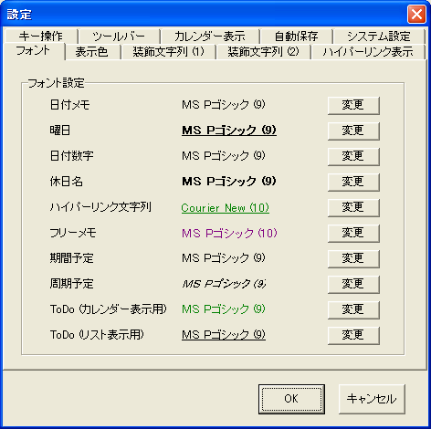

[フォント]タブには，hyCalendar で使われる各種フォントが列挙されています． 右側の [変更] ボタンをクリックすると フォント設定ダイアログが表示され， フォントを選択することができます．
| 名称 | 影響する場所 |
|---|---|
| 日付メモ | カレンダーエリアに記述された日付ごとの予定を表示するためのフォントです． |
| 曜日 | カレンダーエリア上端の，「日」〜「土」の曜日文字列を表示するフォントです． |
| 日付数字 | 各日付の枠上端に表示される 日付の数字（「1/1」など）のフォントです． |
| 休日名 | 各日付の枠上端に表示される 日付の名前（「元旦」など）のフォントです． 周期予定のうち，「日付の名前」として表示することを設定された予定も このフォントで表示されます． |
| ハイパーリンク文字列 | 日付メモ内に記述された， ハイパーリンク対象文字列を表示するフォントです． フリーメモ内の文字列は対象となりません． |
| フリーメモ | フリーメモエリアのフォントです． |
| 期間予定 | 期間予定の表示フォントです． フォントの色設定だけは，各予定ごとに後から個別に変更できます． |
| 周期予定 | 周期予定の表示フォントです． フォントの色設定だけは，各予定ごとに後から個別に変更できます． |
| TODO (カレンダー表示用) | 日付入りのTODOを カレンダー上に表示するときのフォントです． [カレンダー表示]タブで指定される 「TODOの内容を，対応した日付の予定欄に表示する」オプションが有効なときに使用されます． |
| TODO (リスト表示用) | TODOリストビューの フォントを設定します．これは，メインウィンドウのTODOエリア， TODO編集ダイアログの両方に対して適用されます． |
なお，設定できるフォントの中には， 使用環境に応じて， 日本語を表示できない欧文フォントや， 縦書きに使うためのフォントが含まれます． これらを区別するために，次の点に注意してください．